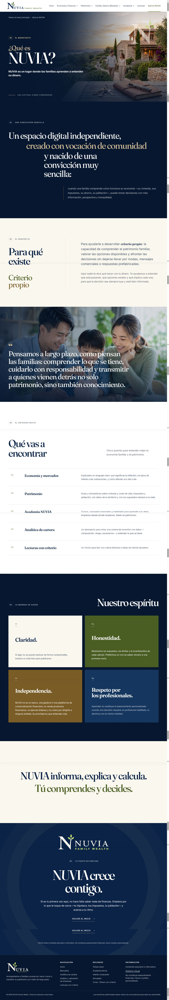

01
Apertura
Movimiento / transiciónFundido desde azul NUVIA. Entrada lenta sobre el hero.
De página a vídeo · Storyboard de realización


Fundido desde azul NUVIA. Entrada lenta sobre el hero.
Desplazamiento vertical suave. La frase aparece por bloques.
La cámara se detiene en «criterio propio».
Zoom lento sobre la escena familiar y la cita.
Barrido vertical. Cada puerta entra de forma secuencial.
Las cuatro tarjetas aparecen una a una.
Pausa visual. El lema ocupa toda la pantalla.
Logo, «NUVIA crece contigo» y fundido a azul.